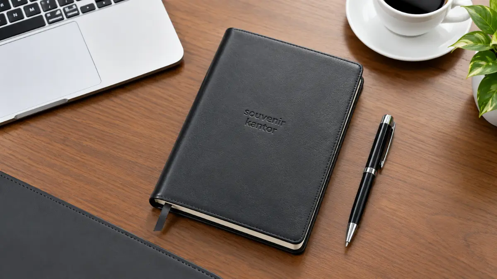

Inspirasi Elegan Souvenir Kantor BUMN Jakarta

Souvenir kantor BUMN Jakarta yang tepat adalah merchandise formal dan fungsional, seperti tumbler premium, notebook, pulpen, gift set, dan plakat, dengan logo perusahaan. Produk-produk ini cocok untuk karyawan, mitra, klien, dan peserta acara pada rapat kerja, seminar, apresiasi, maupun kunjungan tamu, dengan tampilan minimalis yang mencerminkan identitas korporasi. Souvenir Kantor Jakarta membantu tim procurement, general affair, dan corporate secretary mewujudkannya, mulai dari konsultasi, penerapan logo, produksi massal, quality control, hingga pengiriman sesuai lokasi dan jadwal penerimaan.
Lima pilihan utama souvenir kantor BUMN Jakarta: tumbler premium, notebook custom, pulpen custom, gift set corporate, dan plakat. Ciri souvenir korporasi yang representatif: desain minimalis, material berkualitas, finishing rapi, dan logo yang proporsional. Pesanan massal memerlukan koordinasi desain, produksi, quality control, packaging, dan pengiriman sejak tahap awal. Harga mengikuti jenis produk, material, jumlah, teknik branding, finishing, dan packaging, sehingga penawaran disusun per spesifikasi. Pemesanan dimulai dari konsultasi bersama Souvenir Kantor Jakarta.
- Mengapa Souvenir Kantor BUMN Jakarta Layak Dipilih dengan Cermat?
- Pilihan Souvenir Kantor BUMN Jakarta
- Mengapa Tumbler Premium Cocok Menjadi Souvenir Kantor BUMN?
- Kapan Notebook Custom Menjadi Pilihan yang Tepat?
- Pulpen Custom untuk Kebutuhan Massal
- Gift Set Corporate untuk Klien, Mitra, dan Tamu VIP
- Plakat untuk Apresiasi dan Acara Seremonial
- Seperti Apa Karakter Souvenir BUMN yang Formal dan Profesional?
- Bagaimana Menyesuaikan Souvenir dengan Identitas Korporasi?
- Bagaimana Produksi Souvenir BUMN dalam Jumlah Besar Dikelola?
- Apa yang Menentukan Harga Souvenir Kantor BUMN Jakarta?
- Bagaimana Cara Memesan Souvenir Kantor BUMN Jakarta di Souvenir Kantor Jakarta?
- Ide, Harga, dan Layanan Merchandise BUMN Jakarta
- Pesan Souvenir Kantor BUMN Jakarta Sekarang
- Pertanyaan Seputar Souvenir Kantor BUMN Jakarta
- Kesimpulan
Mengapa Souvenir Kantor BUMN Jakarta Layak Dipilih dengan Cermat?
Souvenir kantor mewakili citra perusahaan di tangan penerima, sehingga pemilihannya berpengaruh pada ingatan terhadap merek, kesan profesional, dan peluang terjalinnya hubungan bisnis.
Menurut 2026 ASI Global Advertising Impressions Study, survei terhadap sekitar 5.000 konsumen di Amerika Serikat, Kanada, Meksiko, dan Eropa, sekitar 85 persen responden mengingat pengiklan yang memberi mereka produk berlogo.
Studi yang sama memperkirakan satu produk promosi umumnya menghasilkan sekitar 3.300 tayangan merek selama masa pakainya. Angka tersebut berasal dari survei konsumen di luar Indonesia, sehingga lebih tepat dibaca sebagai gambaran arah, bukan patokan pasar lokal.
Meski demikian, polanya relevan bagi souvenir korporasi: benda yang berguna cenderung disimpan dan dipakai berulang, sehingga logo perusahaan ikut terlihat berulang. Bagi perusahaan BUMN dan instansi di Jakarta, souvenir membawa tuntutan tambahan. Tampilan harus formal, konsisten dengan identitas visual, dan layak diberikan kepada mitra, klien, maupun tamu resmi.
Souvenir Kantor Jakarta memulai dari fungsi dan penerima, bukan sekadar kesan mewah, agar setiap produk benar-benar terpakai dan mewakili perusahaan dengan baik.
Pilihan Souvenir Kantor BUMN Jakarta
Lima pilihan utama souvenir kantor BUMN Jakarta adalah tumbler premium, notebook custom, pulpen custom, gift set corporate, dan plakat, yang masing-masing melayani kebutuhan penerima berbeda.
Mengapa Tumbler Premium Cocok Menjadi Souvenir Kantor BUMN?
Tumbler premium cocok karena dipakai setiap hari, tampil profesional di meja kerja, dan menyediakan area branding yang jelas untuk logo perusahaan. Fungsinya praktis bagi karyawan, mitra, klien, maupun peserta acara. Material dan finishing menentukan kesan akhir produk. Pilihan material, finishing, dan teknik branding dikonfirmasi saat konsultasi bersama Souvenir Kantor Jakarta.
Kapan Notebook Custom Menjadi Pilihan yang Tepat?
Notebook custom tepat untuk rapat, seminar, workshop, dan kegiatan internal, karena penerima langsung memakainya untuk mencatat. Cover dapat memuat logo perusahaan dan identitas acara dengan tampilan formal. Notebook juga mudah dipasangkan dengan pulpen sehingga membentuk set alat tulis yang seragam bagi seluruh peserta.
Pulpen Custom untuk Kebutuhan Massal
Pulpen custom praktis, mudah dibagikan dalam jumlah besar, dan cocok sebagai pasangan notebook. Branding sederhana pada bodi pulpen sudah cukup untuk tampil profesional tanpa terkesan berlebihan. Karena model dan material memengaruhi biaya per unit, spesifikasi sebaiknya ditentukan sejak awal.
Gift Set Corporate untuk Klien, Mitra, dan Tamu VIP
Gift set corporate menggabungkan beberapa produk, misalnya tumbler, notebook, dan pulpen, dalam satu paket untuk penerima tertentu seperti klien, mitra, dan tamu VIP. Packaging menjadi bagian dari pengalaman penerima, sehingga kemasan yang rapi dan seragam memperkuat kesan representatif. Komposisi isi dapat disesuaikan dengan tujuan pemberian dan anggaran.
Plakat untuk Apresiasi dan Acara Seremonial
Plakat sesuai untuk penghargaan, apresiasi, dan acara formal yang memerlukan simbol seremonial. Material, ukuran, desain, dan finishing menentukan kesan akhirnya. Pada acara serah terima, penghargaan mitra, atau apresiasi purnabakti, plakat memberi penerima kenang-kenangan yang layak dipajang.
| Produk | Karakter | Contoh Penggunaan |
|---|---|---|
| Tumbler premium | Profesional dan fungsional | Karyawan, mitra, peserta acara |
| Notebook | Formal dan praktis | Rapat, seminar, workshop |
| Pulpen | Praktis dan mudah digunakan | Merchandise massal |
| Gift set | Eksklusif dan representatif | Klien, mitra, VIP |
| Plakat | Formal dan simbolis | Penghargaan dan apresiasi |
Tabel ini menunjukkan kecocokan produk berdasarkan fungsi, bukan standar resmi institusi mana pun.

Seperti Apa Karakter Souvenir BUMN yang Formal dan Profesional?
Souvenir BUMN yang formal umumnya berdesain minimalis, bermaterial berkualitas, berfinishing rapi, dan menempatkan logo perusahaan secara proporsional dengan warna yang konsisten dengan identitas visual.
Souvenir korporasi yang baik tidak berusaha tampil ramai. Logo tidak dibuat terlalu dominan, warna mengikuti palet perusahaan, dan tampilan akhir terasa tenang serta profesional. Konsistensi antarunit juga penting, karena penerima dalam satu acara akan membandingkan produk yang mereka terima.
Packaging yang seragam menyempurnakan kesan tersebut, terutama untuk gift set dan penerima khusus.
Bagaimana Menyesuaikan Souvenir dengan Identitas Korporasi?
Penyesuaian identitas dilakukan dengan memakai logo, warna, dan tipografi resmi yang telah disetujui, lalu menetapkan posisi dan ukuran logo secara konsisten pada produk dan packaging.
Pemesan menyiapkan file logo dan panduan visual milik perusahaan, kemudian tim produksi menerjemahkannya ke masing-masing produk. Logo yang dicetak harus berasal dari pemesan yang memiliki hak atau izin penggunaan. Souvenir Kantor Jakarta tidak memakai logo perusahaan tertentu sebagai contoh visual tanpa izin.
Bagaimana Produksi Souvenir BUMN dalam Jumlah Besar Dikelola?
Produksi massal dikelola melalui koordinasi enam tahap, yaitu brief, desain, produksi, quality control, packaging, dan pengiriman, agar hasil konsisten dan sesuai jadwal penerimaan.
| Tahap | Hal yang Perlu Diperhatikan |
|---|---|
| Brief | Produk, jumlah, penerima, kebutuhan branding |
| Desain | Logo dan desain yang telah disetujui |
| Produksi | Kapasitas dan timeline |
| Quality Control | Konsistensi produk dan branding |
| Packaging | Jenis dan jumlah kemasan |
| Pengiriman | Lokasi dan jadwal penerimaan |
Kebutuhan merchandise korporasi dalam jumlah besar cenderung memerlukan perencanaan lebih awal agar proses branding, quality control, dan pengiriman dapat dikelola dengan baik.
Setiap tahap saling bergantung: desain yang belum disetujui menunda produksi, dan jadwal penerimaan yang belum jelas menyulitkan pengiriman. Souvenir Kantor Jakarta mengonfirmasi kapasitas dan jadwal setelah jumlah, spesifikasi, dan tenggat diterima, sehingga tidak ada janji waktu yang dibuat sebelum datanya lengkap.
Apa yang Menentukan Harga Souvenir Kantor BUMN Jakarta?
Harga souvenir BUMN Jakarta ditentukan oleh jenis produk, material, jumlah pesanan, teknik branding, finishing, packaging, dan pengiriman, sehingga penawaran mengikuti spesifikasi pemesan.
| Produk | Faktor yang Memengaruhi Harga |
|---|---|
| Tumbler premium | Material, kapasitas, branding |
| Notebook | Material cover, ukuran, finishing |
| Pulpen | Material, model, branding |
| Gift set | Isi produk, packaging |
| Plakat | Material, ukuran, desain, finishing |
Angka harga yang akurat hanya dapat dihitung dari pesanan yang jelas, karena dua permintaan dengan produk sama dapat berbeda biaya ketika jumlah, teknik branding, atau packaging berbeda. Karena itu, penawaran disusun setelah spesifikasi diterima. Pembahasan yang lebih rinci tersedia di artikel harga souvenir BUMN Jakarta dan faktor pembentuk biayanya.
Bagaimana Cara Memesan Souvenir Kantor BUMN Jakarta di Souvenir Kantor Jakarta?
Pemesanan dimulai dari konsultasi kebutuhan, dilanjutkan dengan memilih produk, menentukan jumlah, mengirim logo, menerima penawaran, menyetujui desain, lalu proses produksi hingga pengiriman:
- Konsultasi: sampaikan tujuan pemberian, jenis acara, dan penerima souvenir.
- Pilih produk: tentukan produk sesuai fungsi dan tingkat formalitas.
- Tentukan jumlah: sampaikan jumlah penerima beserta cadangan yang dibutuhkan.
- Kirim logo atau desain: gunakan file logo resmi milik perusahaan.
- Penawaran: terima quotation yang mengikuti spesifikasi pesanan.
- Approval: setujui desain dan spesifikasi sebelum produksi berjalan.
- Produksi: produk dikerjakan sesuai desain dan spesifikasi yang disetujui.
- Quality control: konsistensi produk dan branding diperiksa sebelum pengiriman.
- Packaging: produk dikemas sesuai jenis dan jumlah kemasan yang ditentukan.
- Pengiriman: barang dikirim sesuai lokasi dan jadwal penerimaan.
Ide, Harga, dan Layanan Merchandise BUMN Jakarta
Tiga panduan pendukung membahas ide produk, faktor harga, dan layanan merchandise custom untuk membantu pemesan menyusun kebutuhan souvenir kantor BUMN Jakarta secara lebih rinci:
- Untuk memilih produk berdasarkan acara, penerima, dan tingkat formalitas, baca ide souvenir BUMN Jakarta untuk acara dan kebutuhan korporasi.
- Untuk memahami faktor biaya dan menyiapkan anggaran pengadaan, baca harga souvenir BUMN Jakarta dan faktor yang memengaruhinya.
- Untuk melihat layanan produksi custom dan pesanan massal, baca vendor merchandise BUMN Jakarta di Souvenir Kantor Jakarta.
Konsultasikan Pengadaan Souvenir Kantor BUMN Jakarta Anda
Dapatkan katalog lengkap, mockup digital branding gratis, serta penawaran harga pengadaan terbaik bersama Souvenir Kantor Jakarta.
Hubungi Tim Procurement via WhatsAppPesan Souvenir Kantor BUMN Jakarta Sekarang
Tim procurement, general affair, dan corporate secretary dapat langsung meminta katalog, konsultasi produk, atau penawaran dari Souvenir Kantor Jakarta berdasarkan jumlah dan desain yang dibutuhkan.
Siapkan beberapa informasi berikut agar penawaran dapat disusun lebih cepat dan tepat:
- Produk yang diminati dan jumlah kebutuhan.
- File logo atau desain milik perusahaan.
- Jadwal acara atau tanggal penerimaan yang diharapkan.
- Lokasi pengiriman di Jakarta.
Kunjungi Souvenir Kantor Jakarta untuk melihat katalog, berkonsultasi, mengirim desain, meminta quotation, serta menanyakan estimasi produksi dan pengiriman.
Pertanyaan Seputar Souvenir Kantor BUMN Jakarta
Kesimpulan
Souvenir kantor BUMN Jakarta yang efektif dipilih dari fungsi, penerima, dan identitas korporasi, lalu dipesan dengan spesifikasi jelas agar penawaran, produksi, dan pengiriman berjalan tertata.
- Pilih produk berdasarkan fungsi dan penerima: tumbler premium, notebook, pulpen, gift set, atau plakat.
- Jaga tampilan tetap formal, minimalis, dan konsisten dengan identitas visual perusahaan.
- Rencanakan pesanan massal lebih awal, dari desain hingga jadwal penerimaan.
- Minta penawaran berdasarkan spesifikasi nyata, bukan perkiraan umum.
Mulai rencanakan souvenir perusahaan Anda hari ini dan hubungi Souvenir Kantor Jakarta untuk konsultasi serta penawaran yang sesuai kebutuhan.